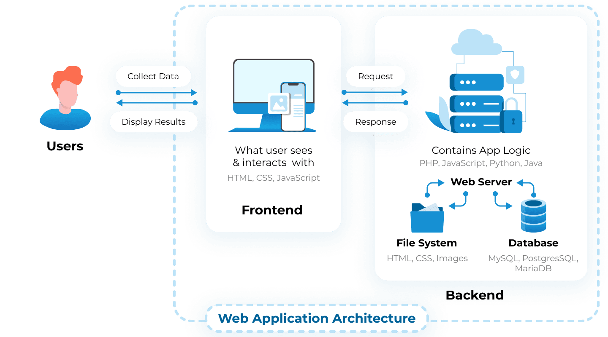

What is a Web?
A website is basically a collection of various webpages that are all related to each other and can be accessed by visiting a homepage.What is Web Development?
Web development is basically the tasks associated with developing websites for hosting via intranet or internet. The web development process involves web design, web content development, client-side/server-side scripting and network security configuration.A website can either be a simple one-page site, or it could be an incredibly complex web application. When you view your website on the web in a browser, it is because of all the processes involved in web development.
Why websites??
Websites act as a bridge between one who wants to share information and those who want to consume it. It helps you reach out to potential clients at a global stage.Websites are a bunch of files stored on computers called servers. The Servers are computers that are used to host websites and store the website files. These servers are connected to the giant network called the World Wide Web. Browsers are programs that you run on your computer. They load the website files via your internet connection.
What is Web Application Architecture?
Web app architecture basically represents relationships and interactions between such components as user interfaces, transaction processing monitors, databases, and others. The primary goal is to ensure that all elements work together correctly. The logic is quite straightforward — when a user types an URL into the browser and hits ‘enter’, the browser makes a request to a server. The server responds and then shows the required web page. All these components create a web application architecture. All applications consist of two parts — client (front-end) and server (back-end).
The front-end is a visual part of the app. Users can see an interface and interact with it. The client-side code responds to the users’ actions. The back-end isn’t visual for users, yet makes their requests work. It handles the business logic and responds to HTTP requests.
So when you enter your credentials into a registration form, you deal with the front-end, but once you hit ‘enter’ and get signed up — it’s the back-end that makes it work.
Working correctly, client and server sides make up a web application software architecture.